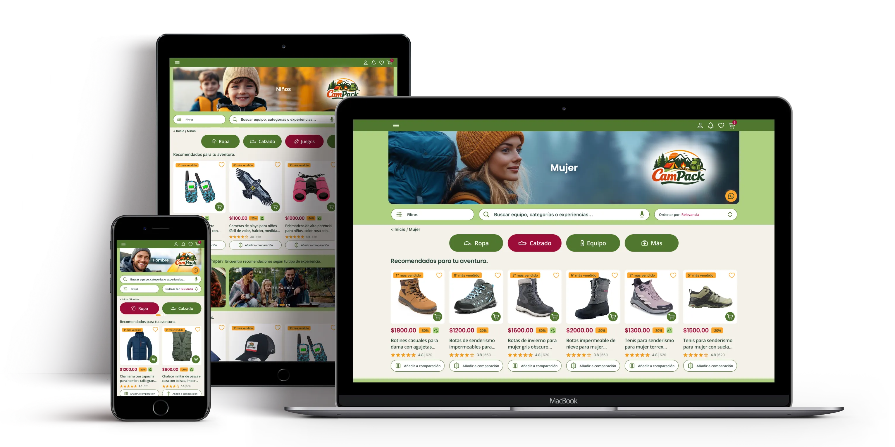
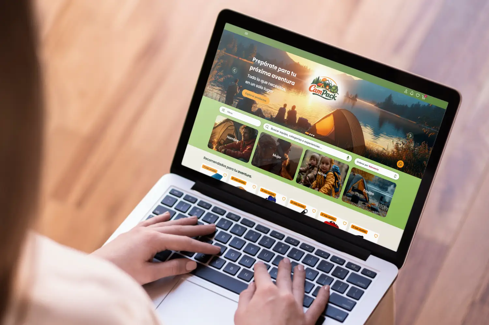
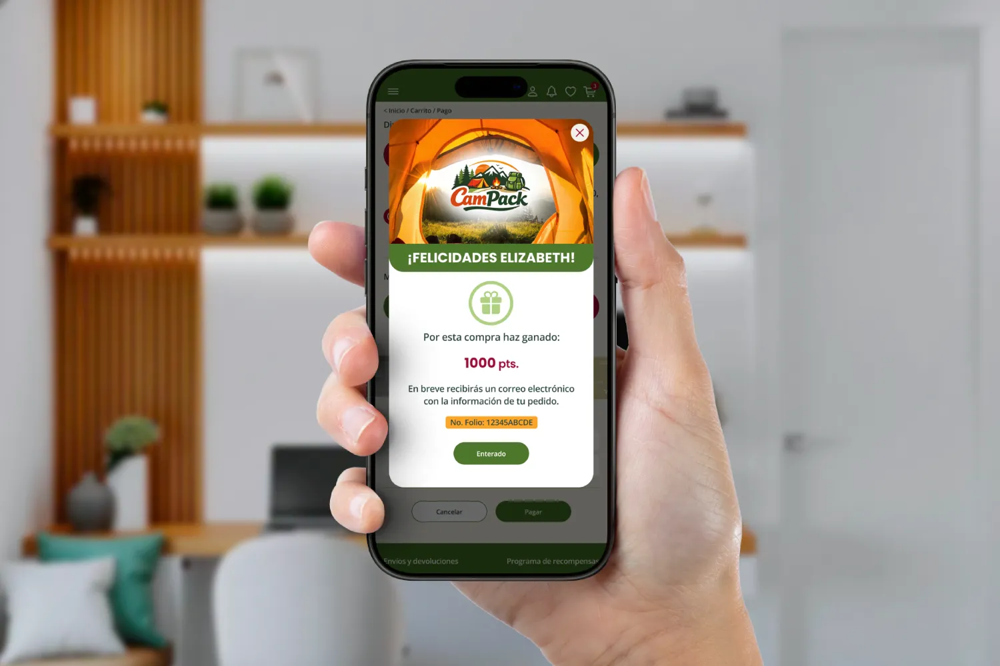
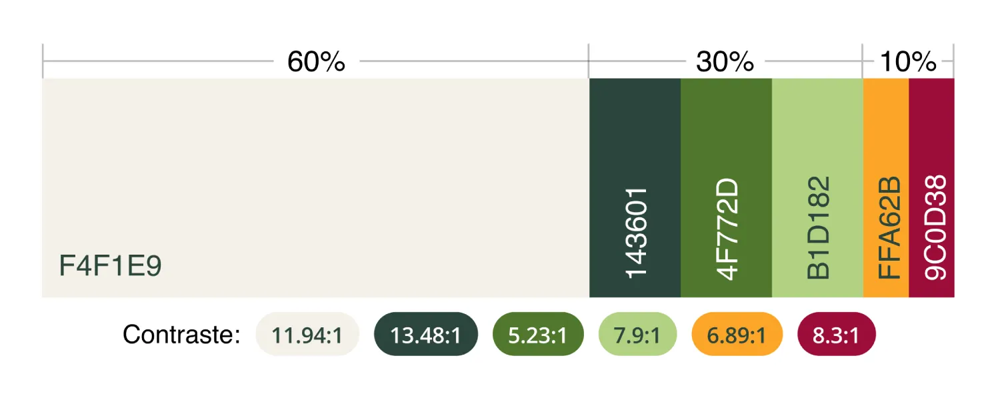
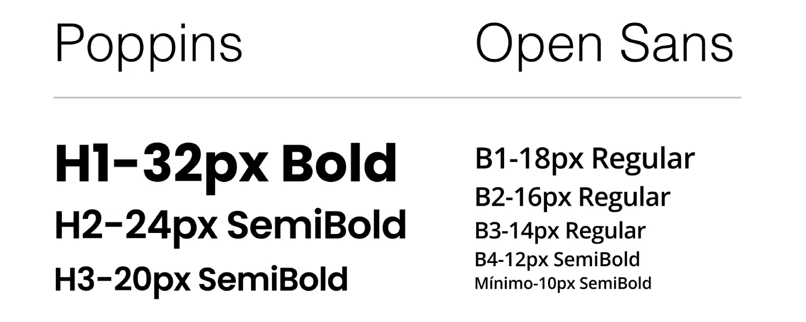
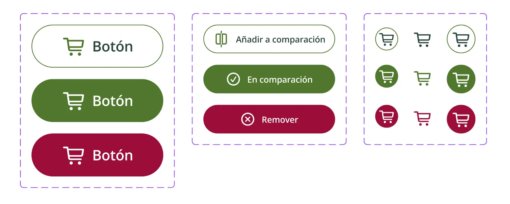
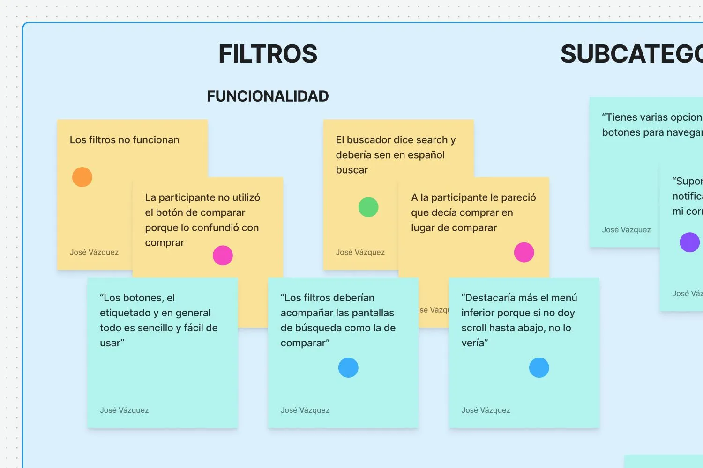

UX/UI Case Study
CamPack
Sitio Web
Diseño UX/UI de una experiencia eCommerce responsive enfocada en claridad y consistencia entre dispositivos.
Ver proceso
Experiencia multidispositivo
Una experiencia adaptada al contexto de cada dispositivo
La navegación y organización del contenido fueron adaptadas para funcionar de forma clara y consistente en desktop, tablet y mobile.

Desktop
Exploración simultánea y comparación visual para facilitar descubrimiento y evaluación de productos.
Tablet
Balance entre claridad y navegación táctil para mejorar lectura y exploración de contenido.

Mobile
Acciones rápidas, filtros simplificados y navegación enfocada en claridad y velocidad.
Estrategia UX
Diseñando para distintos contextos de uso
La experiencia fue adaptada para responder a diferentes formas de navegación e interacción según el dispositivo utilizado.
En desktop se priorizó la exploración y comparación de productos. En tablet se buscó equilibrio entre claridad y navegación táctil. En mobile se simplificó la experiencia para facilitar acciones rápidas.
Desktop
Mayor exploración simultánea, navegación expandida y comparación visual de productos.
Tablet
Optimización táctil y reorganización de módulos para mejorar lectura y navegación.
Mobile
Priorización de acciones rápidas, filtros simplificados y reducción de fricción.
Wireframes
Estructurando una experiencia flexible y escalable
Los wireframes ayudaron a definir la estructura, navegación y distribución del contenido antes de diseñar la interfaz final.
Se diseñó una estructura flexible para mantener claridad y consistencia entre dispositivos.
Explorar wireframes:

Decisión UX
Navegación simplificada para priorizar tareas clave
Se utilizó un menú colapsable incluso en desktop para reducir ruido visual y mantener el enfoque en búsqueda, categorías y descubrimiento de productos.
Se redujeron elementos secundarios para dar mayor prioridad a la búsqueda y exploración de productos.
Sistema visual
Un sistema visual consistente entre dispositivos
Se desarrolló un sistema visual adaptable para mantener coherencia, legibilidad y consistencia entre desktop, tablet y mobile.

Color
Se definió una paleta enfocada en contraste, claridad visual y consistencia de marca.

Tipografía
Jerarquías tipográficas adaptables para mejorar lectura y escaneo de contenido.

Componentes
Componentes reutilizables para mantener consistencia visual y escalabilidad.
Hallazgos de usabilidad
Identificando fricción y oportunidades de mejora
Las pruebas ayudaron a detectar problemas de navegación, organización visual y claridad en acciones importantes.
Navegación secundaria confusa
Menús competían con acciones principales.
Exceso de elementos en desktop
La jerarquía visual dificultaba escaneo rápido.
Jerarquía inconsistente en mobile
Algunas acciones importantes perdían visibilidad.
Insights organizados mediante diagrama de afinidad.

Solución final
Una experiencia más clara, flexible y enfocada en la decisión
La solución final facilita la navegación, comparación y exploración de productos de forma clara y consistente entre dispositivos.
Explorar prototipos:

Resultados
Una experiencia más clara y consistente entre dispositivos
La propuesta mejoró la organización de la navegación y facilitó la exploración y comparación de productos.
Menor fricción
Flujos simplificados y navegación más intuitiva.
Mayor claridad
Mejor jerarquía visual y organización responsive.
Consistencia visual
Experiencia unificada entre desktop, tablet y mobile.
Aprendizajes
Diseñar responsive va más allá de adaptar layouts
Este proyecto reforzó la importancia de adaptar la experiencia según el dispositivo y las necesidades de uso.
Priorizar sobre agregar
Reducir elementos visibles permitió mejorar claridad y enfoque en tareas principales.
Responsive también es UX
Adaptar experiencias implica entender comportamiento y atención según el contexto.
Iterar mejora decisiones
Las pruebas permitieron detectar fricción temprana y refinar la experiencia.
Agradecimientos
Este proyecto fue posible gracias a las personas que participaron en las entrevistas y pruebas de usabilidad. Su retroalimentación ayudó a mejorar la experiencia en cada iteración.
Para proteger la privacidad de las personas participantes, sus nombres se presentan mediante alias.
Las ideas iniciales siempre fueron buenas, pero contar con la opinión real de quienes usarán el sitio ayuda a mejorar el resultado final. Gracias por tomar en cuenta mis comentarios.
Participante A
Participó en: Investigación · Wireframes · Usabilidad
Eliminar las etiquetas redundantes dio mayor protagonismo a las imágenes y la navegación se siente más fluida. No sabría decir exactamente qué cambió, pero ahora es más sencilla de recorrer.
Participante B
Participó en: Wireframes · Usabilidad